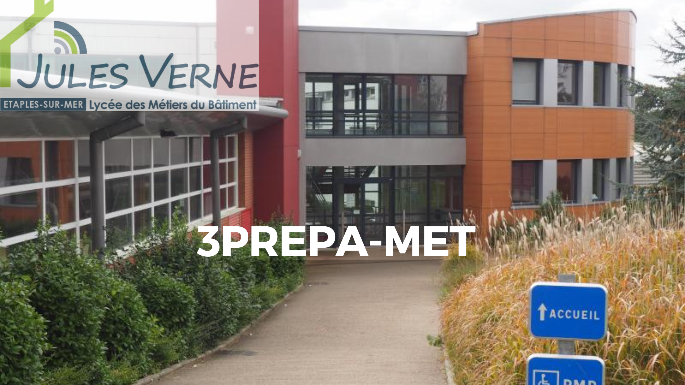

Paramètres de contrôle
Initialisation...
Main gauche détectée:
Non
Main droite détectée:
Non
Position index gauche:
-
Position index droite:
-
Mouvement main droite:
-
Geste détecté:
-
Diapo active:
1
Total diapos:
5